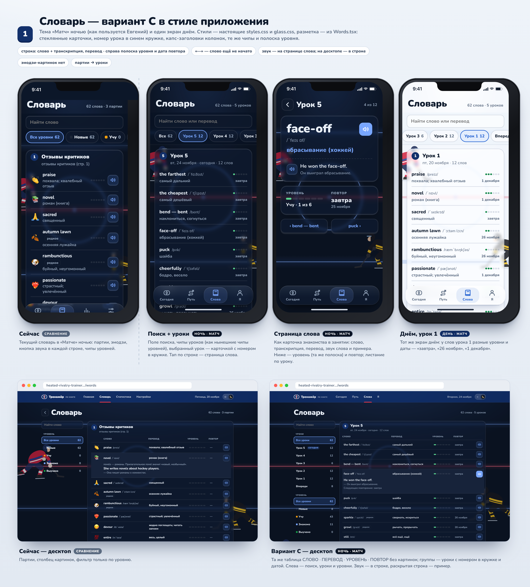
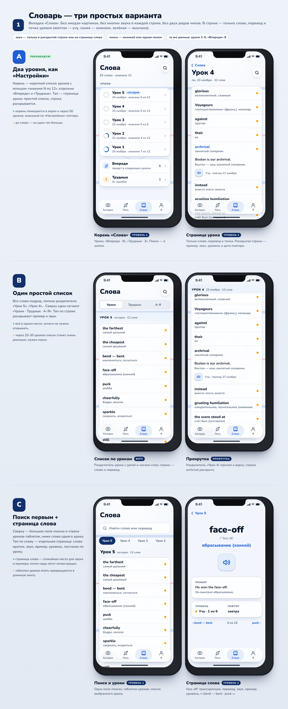
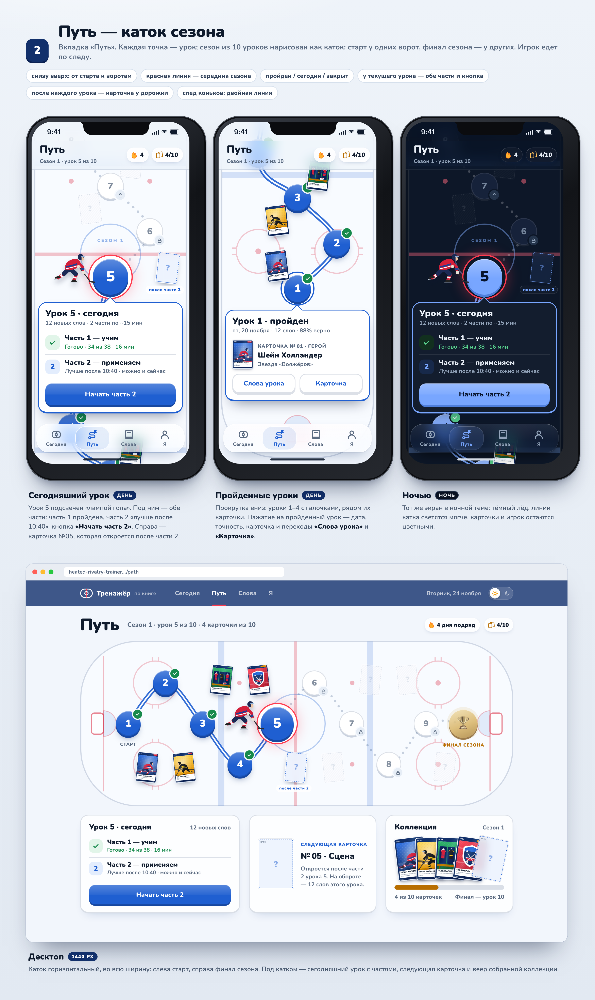
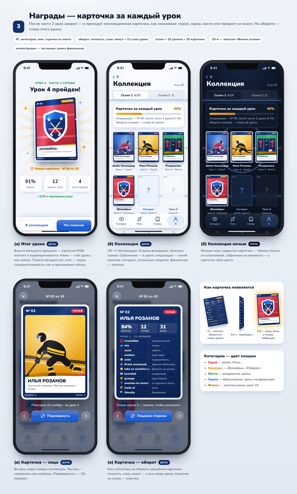
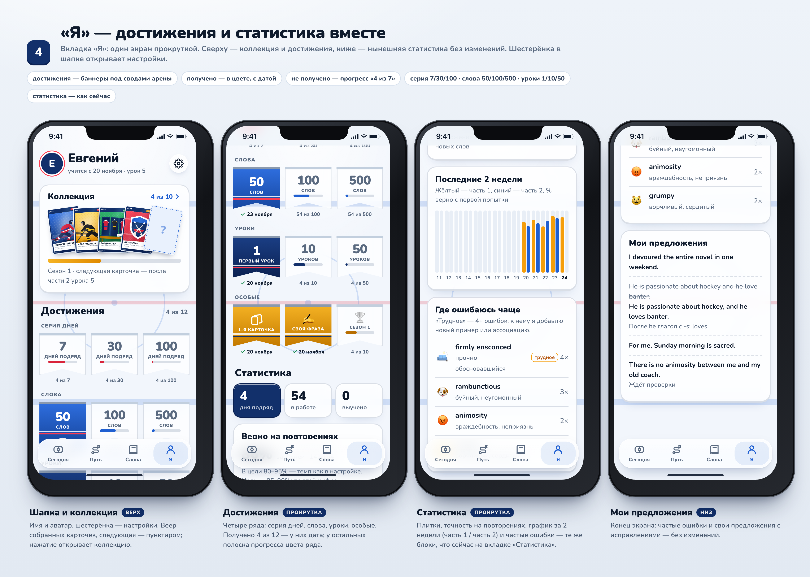

Уроки, путь и награды — макеты
Оформление «Лёд», iPhone 13 (390×844), день и ночь, плюс десктоп страницы «Путь». Слова — из words.json; сценарий: вторник, 24 ноября, уроки 1–4 пройдены, у урока 5 пройдена часть 1.
1Словарь — вариант C в стиле приложения
«Матч» ночью и днём, слева — текущий словарь для сравнения; десктоп — таблица СЛОВО · ПЕРЕВОД · УРОВЕНЬ · ПОВТОР.

1Словарь — три простых варианта
A — два уровня как «Настройки» (рекомендую), B — один список с липкими уроками, C — поиск первым и страница слова.

1Словарь по урокам
Группы «Урок N · дата · слов», «Впереди» — в конце; чипы уроков + прежний фильтр уровней; у урока — его карточка.

2Путь — каток сезона
Сезон из 10 уроков — каток от старта до ворот; у текущего урока обе части и кнопка; карточки у дорожки; день, ночь и десктоп.

3Награды — карточка за урок
Карточка на итоге урока, коллекция (день и ночь), карточка во весь экран — лицо и оборот со словами урока.

4«Я» — достижения и статистика
Один экран: коллекция, достижения-баннеры, затем нынешняя статистика. Шестерёнка — настройки.

Что решить
- Сколько уроков в сезоне (в макете 10 = 10 карточек, 10-я — золотая)?
- Редкость карточек: обычные / «золотые» за 10-й урок / особые за 100% или серию?
- Карточка приходит только после части 2. Если часть 2 так и не пройдена (перенос пропал через 2 дня) — карточки нет, или она приходит урезанной?
- Порядок в словаре: новые уроки сверху (как в макете) или от урока 1?
- «50 слов» в достижениях — слов, пройденных в уроках, или «выучено» (уровень 5–6)?
- Итог урока без панели вкладок (как сейчас в приложении) — оставить так?